Owning and driving an Alfa Romeo 156 is great and puts a big smile on any owners face! :) But - there are some things you should watch out for. Remember that the problems are not happening with every car! If one should make a list for Audi and BMW, it would look scary aswell. |
| .: Known problems with Alfa Romeo 156 :. |
| .: User tip's :. |
| .: FAQ's from the forum :. |
| .: Oily bits :. |
| .: How to remove center console :. |
| .: Buyer's guides :. |
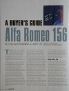
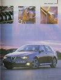
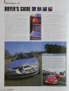
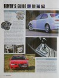
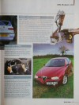
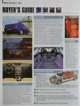
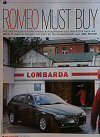
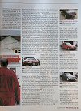
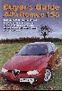
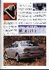
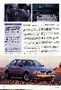
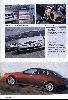
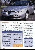
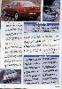
| .: Buyer's guides :. |